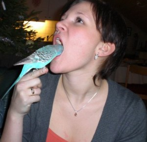

Hei Gretel Mari Braaten!
Hvordan har du det? Her i Australia har vi det bare fint. Christer sin finger henger enda på, og vi er ellers i godt humør.
Vi har sol, og ca 35 grader hver dag.
Har det skjedd noe interessant i Gjøvik? Litt? Neivel. Hvis det mot formodning har skjedd noe kult, så ikke nøl med å bruke kommentarfeltet, vi vil gjerne høre hvordan vinteren er på Gjøvik.
Hvorfor skrives dette innlegget som et brev til Gretel? Jo, her er årsaken:
{kind=link}
Okei, fornøyd nå? Her er en oppdatering, kun tilegnet deg, Gretel Mari Braaten.
Vi tar selvkritikk, vi oppdaterte kanskje litt for ofte den første uka. Eller nei, vi tar ikke kritikk, men vi ser at vi kunne ha gjort ting litt annerledes. Det er tydelig at det nå er forventet at vi skal oppdatere annenhver dag, men vi skal være her enda et par måneder til, og vi skal gå litt på skole innimellom, så blogging har ikke førsteprioritet. Unnskyld, beklager, og håper du kan tilgi oss.
Så Gretel, du ønsker kanskje å vite hva vi har bedrevet siden siste oppdatering? Ok, jeg skal prøve å oppsummere i nogenlunde kronologisk rekkefølge:
Onsdag 23.februar dro vi til en øy som heter Rottnest Island, som ligger nesten 2 mil fra kysten, og er hele 11 km lang. Veldig populær turistattraksjon. Der leide vi tandemsykkel, sykla rundt på øya, så på et dyr som heter Quokka (krysning mellom en rotte og kenguru, hvordan det skjedde er det ingen som vet), badet litt, drakk litt øl, og drakk litt øl til. Så dro vi hjem. Vil du vite mer om øya får du google, her er hvertfall et lite bilde:
 Fin øy.
Fin øy.
Hører også at du nylig har fått en interesse for ski på TV, så kult Gretel, hva er bakgrunnen for dette?
Torsdag 24. februar var det Welcome Party i villagen hvor vi bor. Vi ble servert mat og drikke, folk sjonglerte mens de gikk på stylter, vi fikk servert mocktails og en dame malte små kule ting på ansiktet til folk. Alle fikk en delfin eller rose på kinnet, så da kjørte vi «Norwegians» på og fikk liksågodt malt hele ansiktet vårt i henholdsvis tiger, drage og et norskt flagg (Jeg ville egentlig bli en koala, men dama som malte ville heller male en drage). Siden da har vi blitt gjenkjent i villagen som The Norwegians. Morosamt.
Lørdagen så tok vi en tur på byen. Oss Norwegians og våre australske samboere, Liz og Lauren. Sistnevnte hadde en hel flaske med Passion Pop innabords før vi var kommet frem til utestedene, og noe vi merket ganske tidlig var at hun ikke tåler alkohol, så ja, hun ble båret hjem. Anyways, australske utesteder er jævlig latterlige, og vi ble nektet adgang til et utested kun fordi vi ikke hadde på oss «dress shoes». Synd, trist, leit, men det var heldigvis ikke mangel på utesteder her, så vi fant oss et fint utested som hadde god øl og viste fotballkamper på storskjerm. (Dette førte forøvrig til at Christer ble Manchester United-supporter.)
Nå kommer det morsomme Gretel: Søndagen, altså dagen etter at vi var ute, startet Jon Arne og Christer dagen med en tur på treningssenteret. Liz startet dagen hengende over toalettet. Australiere tåler virkelig ikke alkohol. (Tihi)
Australia – Norge 0-1.
Jeg tror egentlig dette var nok for denne gang Gretel, nå forventer jeg at du sender oss en liten oppdatering. Deal?
For litt mer juicy snacks kan du sjekke twitter-siden vår.
Og ja, må nesten komme med et lite tips til deg Gretel: Når din (bedre?) halvdel bruker munnskyllevann, så er det ikke så lurt å klemme på kinnene hans. Da får du fort skylla ansiktet ditt med munnskyllevann, det kunne jeg fortalt deg på forhånd.
Hvis noen andre skulle lese dette, og ikke vet hvem Gretel er, så legger jeg ved et lite bilde. Gretel er i lyseblått.

(Bildet er brukt etter tillatelse fra Hallvard, som sier at han er «the boss».)
{kind=link}
Neste oppdatering kommer plutselig.
Og til slutt: Gretel, slutt å spis opp godteriet til Hallvard!!
Her er 2 fine bildegallerier:
[LAT SOM DET ER ET BILDEGALLLERI HER]
Hæia bloggen!
Først og fremst må jeg jo få takke the norwegians for at et så fint reisebrev ble dedikert til meg! En ekstra muss til Jon Arne som forfattet en så fin tekst.
Dere er herved tilgitt for å nedprioritere bloggingen, og får en klapp på rompa for å være flinke skolegutter!
Jeg har det kjempbra. Det er sol, klar himmel og -7 grader akkurat nå. Når jeg kler på meg ull,fleece og bobblejakke for en snartur på butikken er det som en vakker sommerdag i nettopp Australia!
Sett bort fra det fine været er hverdagen i Gjøvik utrolig lite innholdsrik, altså dårlig oppdatering. SJOKK!
Men har litt i stikkordsform..
-Ole Magnus hilser av og til på meg i kantina, men ikke alltid for han er for kul
-Når Lars Erik, Hallvard og Ole Magnus går sammen i kantina så «ploger» de seg fram i saktefilm, med Lars Erik i fronten og ser sykt bra ut
-Som jeg vet, så har ingen drukket i Gjøvik siden dere dro.. Hvertfall ikke sammen.
-Vi har fått Diving Dolphin i hus og livet blir litt bedre da. Bare spør Hallvard (Det er forresten på grunn av den at jeg spiser opp alt godteriet hans:D)
Ja, VM! whooop whoop whooop! Jeg har alltid vist en usannsynlig liten interesse for all form for sport.
MEN SÅ: Nå mandag, midt i klassiskløpet for kvinner lærte jeg at selv om Marit Bjørgen startet lenge etter førstemann(kvinne), så kunne hun faktisk vinne da de måler tiden individuelt!
Visste du det?! Fantastisk lurt.
Tusen takk Hallvard for at du fortalte om munnskyllevannet.:p Det var sykt morsomt og jeg kommer ikke til å gjøre det igjen. Hahahhaha 😀
ps. Hallvard e ikke og kommer aldri til å vær «the boss» :)
Jeg lurer på om noen andre enn Gretel har tenkt over ploginga.. :p